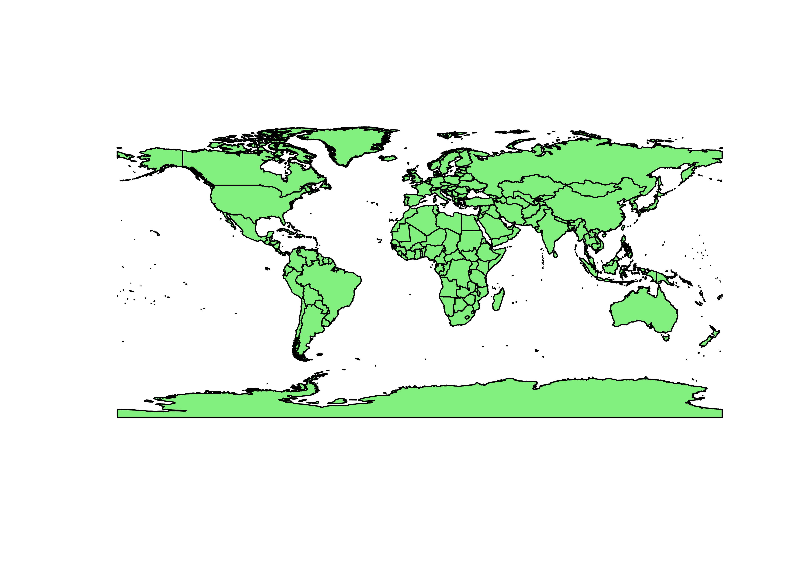
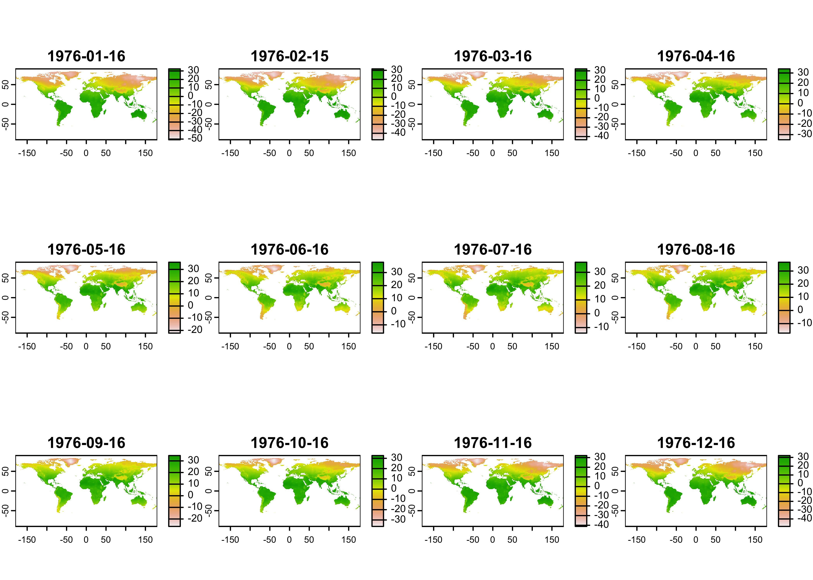
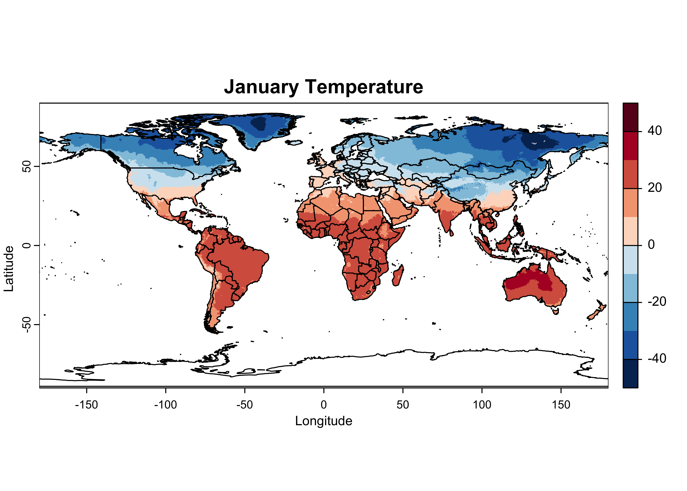
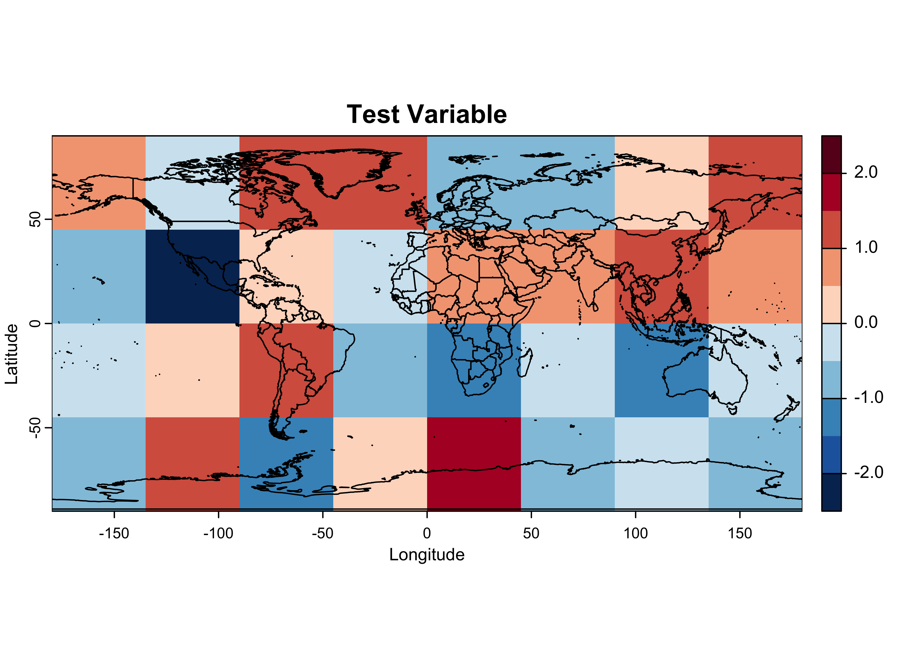
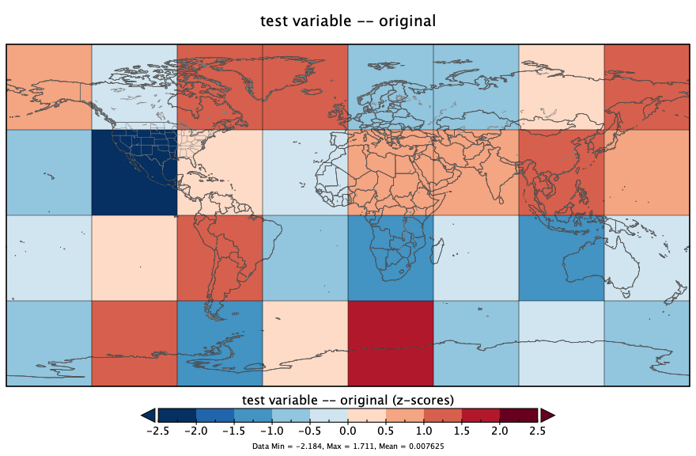
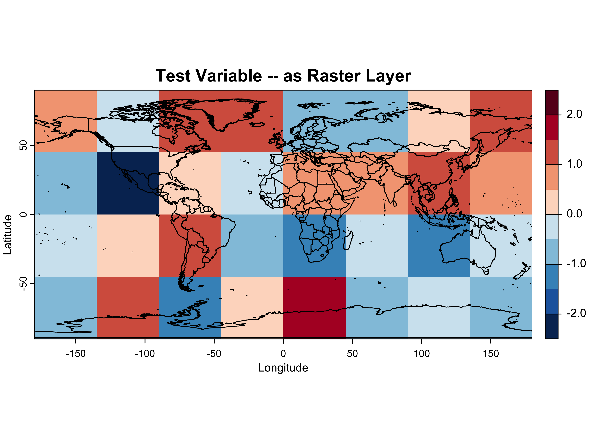
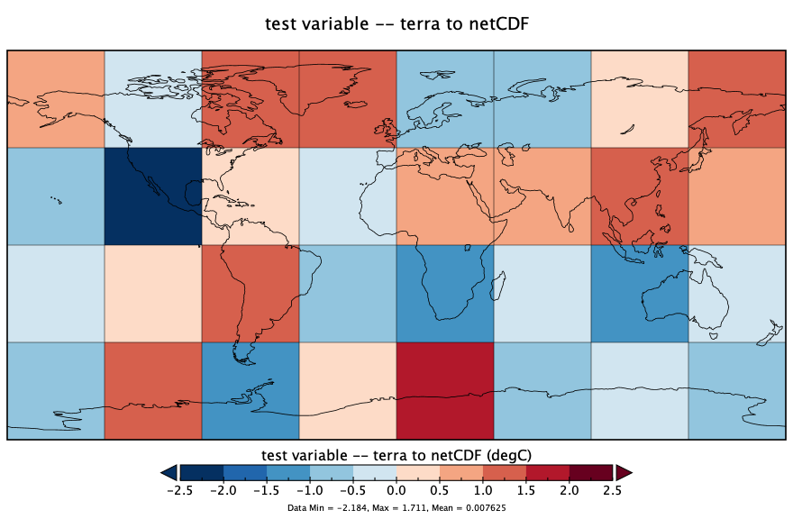

netCDF and terra
1 Introduction
There are three semi-related R packages for visualizing and analyzing
spatial and temporal data: - sf (Simple Features for R [https://r-spatial.github.io/sf/]),
which might be though of as main vehicle for managing the diverse kinds
of geospatial data, automaticaly linking to the main packages for
geospatial-type analyses (GEOS, s2geometry,
PROJ, and GDAL); - stars
(Spatiotemporal Arrays [https://r-spatial.github.io/stars/index.html])
with supports the analysis of spatiotemporal data; and -
terra ([https://rspatial.org/index.html])
which focuses mainly on raster data (such as satellite remote-sensing
data), but can also manage spatial vector data.
Each of these packages has functions for reading and writing data sets in a number of formats (like netCDF or HDF), and for storing and manipulating the data internally. Because all nicely support netCDF, and netCDF has its own functions for reading or writing arrays, it can be viewed as the glue that links the packages, both to one-another as will as to the “outside” world.
2 The terra package
The terra package is large library of functions and
methods for dealing with raster data sets, including many geospatial
formats, including netCDF. It is a rapidly deloping package, replacing
the old raster package. The functions support many
different kinds of geospatial procedures applied to raster data, like
regridding and interpolation, hillslope shading calculations, logical
and mathematical manipulations and so on, but it also can efficiently
read and manipulate large data sets. In particular terra is
designed to only read into memory those parts of a data set that are
necessary for some analysis, raising the possibility of analyzing data
sets that are much larger than the availble machine memory. In addition,
some of the “flatting” and “reshaping” maneuvers that are required to
get netCDF data sets into “tidy” formats are supported by individual
functions. Below are some simple examples of reading and writing netCDF
data sets.
To illustrate the terra approach to reading and
displaying the CRU temperature data, first load the required
packages:
Also read a world outline shape file for plotting:
# read a shape file
shp_file <- "/Users/bartlein/Projects/RESS/data/shp_files/world2015/UIA_World_Countries_Boundaries.shp"
world_outline <- as(st_geometry(read_sf(shp_file)), Class = "Spatial")
plot(world_outline, col="lightgreen", lwd=1)
Convert the world_outline to a spatial vector
(SpatVector), one of the classes of objects familiar to the
terra package (the other being
SpatRaster).
## [1] "SpatVector"
## attr(,"package")
## [1] "terra"2.1 Read a netCDF file
Next, set the path, filename, and variable name for the CRU long-term mean temperature data
# set path and filename
nc_path <- "/Users/bartlein/Projects/RESS/data/nc_files/"
nc_name <- "cru10min30_tmp"
nc_fname <- paste(nc_path, nc_name, ".nc", sep="")
dname <- "tmp" # note: tmp means temperature (not temporary)Read the 3-D array from the netCDF file using the rast()
function:
## class : SpatRaster
## dimensions : 360, 720, 12 (nrow, ncol, nlyr)
## resolution : 0.5, 0.5 (x, y)
## extent : -180, 180, -90, 90 (xmin, xmax, ymin, ymax)
## coord. ref. : lon/lat WGS 84
## source : cru10min30_tmp.nc:tmp
## varname : tmp (air_temperature)
## names : tmp_1, tmp_2, tmp_3, tmp_4, tmp_5, tmp_6, ...
## unit : degC, degC, degC, degC, degC, degC, ...
## time (days) : 1976-01-16 to 1976-12-16## [1] "SpatRaster"
## attr(,"package")
## [1] "terra"Typing the name of the object tmp_raster produces a
short summary of the contents of the file. Note that the class of the
object just created is SpatRaster as opposed to
array.
Next, plot the data, using the terra package default
plotting function.

Plot just the January data, using the subset() function
to get the data:

Here’s a nicer plot:
# plot January temperature
breaks <- c(-50,-40,-30,-20,-10,0,10,20,30,40,50)
color_fun <- colorRampPalette(rev(brewer.pal(10,"RdBu")))
plot(tjan_raster, col = color_fun(10), type = "continuous", breaks = breaks,
main = "January Temperature", ylab = "Latitude", xlab = "Longitude")
plot(world_otl, add = TRUE)
So it looks like the raster package can read a netCDF
file with fewer lines of code than ncdf.
2.2 “Flatting” a raster brick
The values() function in terra reshapes a
raster object; if the argument of the function is a raster layer, the
function returns a vector, while if the argument is a raster stack or
raster brick (e.g. a 3-D array), the function returns a matrix, with
each row representing an individual cell (or location in the grid), and
the columns representing layers (which in the case of the CRU data are
times (months)). The replicates the reshaping described earlier for
netCDF files.
## [1] "matrix" "array"## [1] 259200 12The class and diminsions of tmp_array describe the
result of the reshaping – the nlon x nlat x 12 brick is now a
rectangular data set.
## tmp_1 tmp_2 tmp_3 tmp_4 tmp_5 tmp_6 tmp_7 tmp_8 tmp_9 tmp_10 tmp_11 tmp_12
## [1,] -35.8 -37.9 -36.7 -28.1 -12.8 -0.9 3.3 1.4 -7.9 -20.2 -29.7 -33.6
## [2,] -35.4 -37.5 -36.3 -27.7 -12.7 -0.9 3.3 1.4 -7.8 -19.9 -29.3 -33.3
## [3,] -35.1 -37.1 -35.9 -27.4 -12.5 -0.9 3.3 1.4 -7.7 -19.7 -28.9 -32.9
## [4,] -34.6 -36.6 -35.5 -27.1 -12.3 -0.9 3.2 1.4 -7.6 -19.4 -28.5 -32.5
## [5,] -31.8 -33.3 -33.6 -24.3 -11.3 -2.3 1.2 -1.1 -12.9 -23.7 -28.1 -31.0
## [6,] -32.1 -33.6 -33.8 -24.6 -11.5 -2.5 0.9 -1.3 -13.2 -24.2 -28.5 -31.43 NetCDF and the terra package
The terra package evidently has the capability of
reading and writing netCDF files. There are several issues that could
arise in such transformations (i.e. from the netCDF format to the
terra SpatRaster format) related to such
things as the indexing of grid-cell locations: netCDF coordinates refer
to the center of grid cells, while terra coordinates refer
to cell corners.
In practice, the terra package seems to “do the right
thing” in reading and writing netCDF, as can be demonstrated using a
“toy” data set. In the examples below, a simple netCDF data set will be
generated and written out using the ncdf4 package. Then
that netCDF data set will be read in as a raster “layer” and plotted,
and finally the raster layer will be written again as a netCDF file. As
can be seen, the coordiate systems are appropriately adjusted going back
and forth between netCDF and the raster “native”
format.
3.1 Generate and write a simple netCDF file
Generate a small nlon = 8, nlat = 4 2-d
netCDF data set, filled with normally distributed random numbers
# create a small netCDF file
# generate lons and lats
nlon <- 8; nlat <- 4
dlon <- 360.0/nlon; dlat <- 180.0/nlat
lon <- seq(-180.0+(dlon/2),+180.0-(dlon/2),by=dlon)
lon## [1] -157.5 -112.5 -67.5 -22.5 22.5 67.5 112.5 157.5## [1] -67.5 -22.5 22.5 67.5# define dimensions
londim <- ncdim_def("lon", "degrees_east", as.double(lon))
latdim <- ncdim_def("lat", "degrees_north", as.double(lat))
# generate some data
set.seed(5) # to generate the same stream of random numbers each time the code is run
tmp <- rnorm(nlon*nlat)
tmat <- array(tmp, dim = c(nlon, nlat))
dim(tmat)## [1] 8 4## [1] "matrix" "array"The date generated by the rnorm() function are
“Z-scores” – normally distributed random numbers with a mean of 0.0 and
a standard deviation of 1.0. Note the class of the generated data
(tmat). Continue building the netCDF data set.
# define variables
varname="tmp"
units="z-scores"
dlname <- "test variable -- original"
fillvalue <- 1e20
tmp.def <- ncvar_def(varname, units, list(londim, latdim), fillvalue,
dlname, prec = "single")As can be seen, the longitudes run from -157.5 to +157.5, while the latitudes run from -67.5 to +67.5, and they define the centers of the netCDF grid cells.
Here’s what the data looks like:
## [,1] [,2] [,3] [,4] [,5] [,6] [,7] [,8]
## [1,] 0.8190089 -0.2934818 1.4185891 1.49877383 -0.6570821 -0.8527954 0.3159150 1.1096942
## [2,] -0.5973131 -2.1839668 0.2408173 -0.25935541 0.9005119 0.9418694 1.4679619 0.7067611
## [3,] -0.2857736 0.1381082 1.2276303 -0.80177945 -1.0803926 -0.1575344 -1.0717600 -0.1389861
## [4,] -0.8408555 1.3843593 -1.2554919 0.07014277 1.7114409 -0.6029080 -0.4721664 -0.6353713The t() function transposes the matrix by flipping it
along the principal diagonal, while the selection
[(nlat:1),] flips the data top to bottom, so it will be
consistent with the maps below. Notice the two extreme values,
-2.18 (second row, second column) and 1.71
(fourth row, fifth column); these will help in the comparison of the
maps later.
Convert tmat to a terra
SpatRast for plotting. Also add the spatial extent of the
raster, which extends from the cell edges, as opposed to the cell
centers
tmat_sr <- rast(tmat)
tmat_sr <- t(tmat_sr) # transpose
tmat_sr <- flip(tmat_sr, direction = "vertical")
ext(tmat_sr) <- c(-180.0, 180.0, -90.0, 90.0)Here’s what the generated data look like:
# plot tmpin, the test raster read back in
breaks <- c(-2.5, -2.0, -1.5, -1.0, -0.5, 0.0, 0.5, 1.0, 1.5, 2.0, 2.5)
color_fun <- colorRampPalette(rev(brewer.pal(10,"RdBu")))
plot(tmat_sr, col = color_fun(10), type = "continuous", breaks = breaks,
main = "Test Variable", ylab = "Latitude", xlab = "Longitude")
plot(world_otl, add = TRUE)
Write the generated data to a netCDF file using ncdf4
functions.
# create a netCDF file
ncfname <- "test-netCDF-file.nc"
ncout <- nc_create(ncfname, list(tmp.def), force_v4 = TRUE)
# put the array
ncvar_put(ncout, tmp.def, tmat)
# put additional attributes into dimension and data variables
ncatt_put(ncout, "lon", "axis", "X")
ncatt_put(ncout, "lat", "axis", "Y")
# add global attributes
title <- "small example netCDF file -- written using ncdf4"
ncatt_put(ncout, 0, "title", title)
# close the file, writing data to disk
nc_close(ncout)Here’s what the netCDF file looks like, as plotted in Panoply:

The ncdump command-line utility can be used to verify
the contents of the file. At the Console in RStudio, the following code
would do that:
3.2 Read the simple netCDF file back in as a raster layer
Now read the newly created netCDF data set back in as a
SpatRast object. (Load the packages if not already
loaded.)
## class : SpatRaster
## dimensions : 4, 8, 1 (nrow, ncol, nlyr)
## resolution : 45, 45 (x, y)
## extent : -180, 180, -90, 90 (xmin, xmax, ymin, ymax)
## coord. ref. : lon/lat WGS 84
## source : test-netCDF-file.nc
## varname : tmp (test variable -- original)
## name : tmp
## unit : z-scores## [1] "SpatRaster"
## attr(,"package")
## [1] "terra"Listing the object as above, provides its internal terra
attributes, while the print() function provides the
characteristics of the source netCDF file.
## class : SpatRaster
## dimensions : 4, 8, 1 (nrow, ncol, nlyr)
## resolution : 45, 45 (x, y)
## extent : -180, 180, -90, 90 (xmin, xmax, ymin, ymax)
## coord. ref. : lon/lat WGS 84
## source : test-netCDF-file.nc
## varname : tmp (test variable -- original)
## name : tmp
## unit : z-scoresHere’s what the generated data look like after being read back in:
# plot tmpin, the test raster read back in
breaks <- c(-2.5, -2.0, -1.5, -1.0, -0.5, 0.0, 0.5, 1.0, 1.5, 2.0, 2.5)
color_fun <- colorRampPalette(rev(brewer.pal(10,"RdBu")))
plot(tmpin, col = color_fun(10), type = "continuous", breaks = breaks,
main = "Test Variable -- as Raster Layer", ylab = "Latitude", xlab = "Longitude")
plot(world_otl, add = TRUE)
3.3 Check the coordinates of the raster
The spatial extent of the tmpin raster runs from -180.0
to + 180.0 and -90.0 to + 90.0, but as originally generated, the the
grid cells in the netCDF file ranged from -157.5 to + 157.5 and -67.5 to
+ 67.5. Was information on the layout of the grid lost while writing out
or reading in the netCDF file? The actual coordinate values of the cell
centers can be gotten as follows:
## [1] -157.5 -112.5 -67.5 -22.5 22.5 67.5 112.5 157.5## [1] 67.5 22.5 -22.5 -67.5These can be compared with the original `lon’ and ‘lat’ values defined above:
## [1] -157.5 -112.5 -67.5 -22.5 22.5 67.5 112.5 157.5## [1] 67.5 22.5 -22.5 -67.5(Note that the latitudes in the netCDF file were defined to run from
negative to positive values, while the terra
yFromRow() function reports them in descending order.
Multiplying lon reverses the order for comparability.) So,
no information on the layout of the grid was lost.
3.4 Write the raster layer as a netCDF file
Write the generated data (as tmat_sr, a
SpatRaster object with coordinates/spatial extent data) to
a netCDF file, this time using writeCDF() from the
terra package:
# create a netCDF file
ncfname <- "test-netCDF-terra.nc"
writeCDF(tmat_sr, ncfname, overwrite = TRUE, varname = "tmp", unit = "degC",
longname="test variable -- terra to netCDF")Here’s what that netCDF file looks like, as plotted in Panoply:

The ncdump command-line utility can be used to verify
the contents of the file. At the Console in RStudio, the following code
would do that: